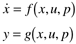

| [ Team LiB ] |
|
2.1 BackgroundReasons for ModelingThere are many reasons for developing process models. Improving or understanding chemical process operation is a major overall objective for developing a dynamic process model. These models are often used for (i) operator training, (ii) process design, (iii) safety system analysis, or (iv) process control. Operator training: The people responsible for the operation of a chemical manufacturing process are known as process operators. A dynamic process model can be used to perform simulations to train process operators, in the same fashion that flight simulators are used to train airplane pilots. Process operators can learn the proper response to upset conditions, before having to experience them on the actual process. Process design: A dynamic process model can be used to properly design chemical-process equipment for a desired production rate. For example, a model of a batch chemical reactor can be used to determine the appropriate size of the reactor to produce a certain product at a desired rate. Safety: Dynamic process models can also be used to design safety systems. For example, they can be used to determine how long it will take, after a valve fails, for a system to reach a certain pressure. Process control: Feedback control systems are used to maintain process variables at desirable values. For example, a control system may measure a product temperature (an output) and adjust the steam flow rate (an input) to maintain that desired temperature. For complex systems, particularly those with many inputs and outputs, it is necessary to base the control-system design on a process model. Also, before a complex control system is implemented on a process, it is normally tested by simulation. It should be noted that no single model of a process exists, since a model only approximates the process behavior. The desired accuracy and resulting complexity of a process model depends on the final use of the model. Usually more-complex models will require much more data and effort to develop than simplified models, since more model parameters will need to be determined. The focus of this textbook is on process control, so model development is provided with this in mind. Lumped Parameter System ModelsThe models developed in this textbook are known as lumped parameter systems models. These models consist of initial-value ordinary differential equations, often based on a perfect mixing assumption. The models have the form  where x is the vector of state variables, the vector of state variables derivatives with respect to time equal to dx/dt, u the vector of input variables, p the vector of parameters, y the vector of output variables, and, f(x,u,p) and g(x,u,p) the vectors of functions. State variables are variables that naturally appear in the derivative term of ordinary differential equation models. Common states resulting from overall material balance equations include total mass, volume, level for liquid-phase processes, and pressure for gas-phase processes. Component compositions are the most common states that arise from component material balances. Temperature is the most common state arising from an energy balance modeling equation. This state-variable representation seems very abstract at this juncture, and it generally takes students some time to become comfortable with it. The easiest way is to work through some simple examples to begin to associate the notion of states, parameters, inputs, and outputs with the physical variables associated with chemical processes. Throughout the text we use matrix and vector notation; you may wish to review any standard linear algebra book to become familiar with this notation. A concise review is also provided in the MATLAB module (Module 1). |
| [ Team LiB ] |
|